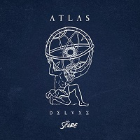

Ryan Reynolds é um ator canadense, que nasceu em Vancouver. Entre 1991 e 1993 Ryan apareceu em Hillside, uma série da Nickleodeon, gravada na Flórida, com muitos outros atores canadenses. Depois ele voltou para Vancouver, onde participou de uma série de TV. Fez pequenos papéis na televisão, em "Glenn Close's Serving in Silence: The Margarethe Cammermeyer Story, em 1995, e no canal CBS em "A Sangue Frio", que foi ao ar em 1996. Ryan Reynolds tem na lista filmes como "Deadpool", "Ted", "Protegendo O Inimigo", "R.I.P.D: Agentes Do Além", "Lanterna Verde", "A Proposta", "Horror em Amityville", "Blade: Trinity", "Sabrina - Aprendiz de Feiticeira" e por ai vai. "Deadpool" lhe rendeu o prêmio de Melhor Peformance de Comédia Original pela MTV Movie Awards.

Email: fsl1@aluno.ifnmg.edu.br